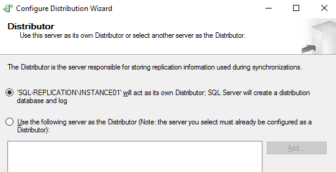
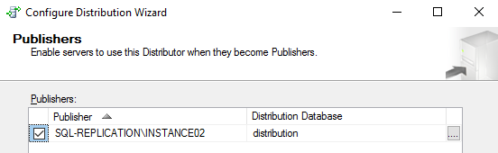
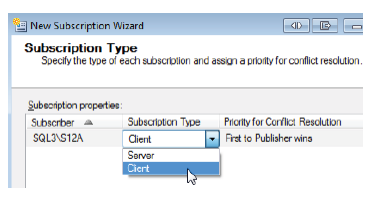

Overview
- While it's possible to set up replication outside of a domain, it is not recommended. However, if forced to work outside of a domain, ensure that each user account used for replication exists on every machine and is configured with the same password, instead of existing just on the domain controller.
- To set up replication, configure the Distributor, create a publication, and then a subscription.
- To see the difference between push and pull subscriptions, the Distributor and Subscriber must be on different machines.
- Combining two or more machines can hide mistakes that don't show up unless replication is set up on separate machines.
Requirements
- Same system collation settings between the servers.
- Same Local windows groups and SQL Server Login definitions on both servers.
- External software components are installed on both servers.
- CLR assemblies deployed on the publisher are also deployed on the subscriber.
- SQL agent jobs and alerts are present on the subscriber server, if these are required.
- Certificates and keys used to access external resources, authentication and encryption match on the publisher and subscriber server.
Setting up Distributor
- In Object Explorer of the SQL Server instance that will be assigned as a Publisher, right-click the Replication folder and click Configure Distribution to launch the Configuration Distribution Wizard.
- Distributor - There is an option to choose to set up the current instance to be a Distributor or select another instance that's already been configured as a Distributor. When using the local distributor model, these two steps occur with one execution of the wizard.
- A warning may show when adding a different server to be the Distributor. To solve the error, enable the server as a Publisher in the Distributor.
- If the publisher is set up to use a different server to be used as the distributor, on the Administrative Password page, specify the Administrative link password.
- SQL Server Agent Start - If the SQL Server Agent is not set up to start automatically with the OS, this is an additional page that can change SQL Server Agent's configuration.
-
Snapshot Folder - Note the following when specifying the location for the snapshot folder upon configuration:
- The path you specify must be correct. The wizard cannot validate it because the accounts used to access the folder are not yet known.
- Specified folder may use a special share name that can usually be accessed only by a login with administrative privileges on that computer. This share may not be accessible by agents running on other computers, such as the agents for pull subscriptions.
-
Distribution Database
- Specify the name of the distribution database and the folders where the data and log files should be located.
- The paths must refer to the disks that are local to the Distributor and begin with a local drive letter and colon.
- This wizard is not allowed to create multiple distribution databases.
-
Publishers
- It shows a list of all registered Publishers.
- Specify the Publishers that should have access to the Distributor.
- Every SQL Server instance that will be set up as a Publisher and that is going to use this Distributor needs to be added to this list because every Publisher needs to be registered with the Distributor.
- Being on a Distributor's access list does not make a server a Publisher. It merely grants the server access to that Distributor.
- If the Distributor is just being set up, the list will contain only the Distributor itself when the page first appears.
- The local instance is always pre-selected in this list. That is due to the fact that a SQL Server instance that is set up to be a Distributor can use only itself as a Distributor for publishing.
- Finish the wizard. If you received an error regarding Agent XP blocked from being accessed, set up the SQL Server Agent manually to run automatically.
- To verify, below objects should be seen in SSMS.

When the snapshot folder is set up, ensure that the appropriate rights have been granted on that folder. In addition, ensure that read and write access to that share has been granted to the "Everyone" group (not best practice).
If these folder security settings are not set up correctly, deal with failures that don't generate obvious or even easy-to-find error messages. There are no completely silent errors in replication. However, sometimes everything looks fine at first glance and have to really dig to see that there is a problem.

To enable the instance selected as Publisher to use this Distributor, click the Add button, and then select SQL Server Publisher in the drop-down list that appears. A standard "SQL Server Connect to Server" dialog box appears. Pick the publishing server instance. If the Distributor itself will not be used, after adding the Publisher, uncheck the Distributor.
When adding a SQL Server instance that is not the Distributor, an additional page will appear. Specify the password that remote Publishers must use to access the Distributor. Every time a Publisher is set up and connected it to the Distributor, this password must be provided.


Setting up Publication (Snapshot)
- In Object Explorer of the SQL Server instance that will be assigned as a Publisher, expand the Replication folder, right-click Local Publication, and then click New Publication to launch the New Publication Wizard.
- Publication Database - Select a database. There will be a note advising that not all databases might be included in the list. If this is the case, then enable the database for replication in the publisher.
- Publication Type - Select Snapshot Publication. If you are not a member of the db_owner role, you might see an error like below. It means that the selected database is not enabled for the type of replication selected.
- Articles - It lists all objects that can be replicated. Choose which articles should be part of the publication (if you are just doing a standard/simple set-up, you can proceed on Snapshot Agent section).
- Associated with each article is a set of properties that can be viewed or reconfigured.
- To access the properties associated with an object, select an object in the Objects to publish list, and then click the Article Properties button. This opens a drop-down list that lets you choose between showing the Article Properties dialog box for the highlighted article only, or showing the dialog box for all table articles in the publication.
- The second option allows you to change the properties of all articles of a single type (the type of the highlighted object) in one shot.
- Bi-directional
- Download-only to Subscriber, allow Subscriber changes
- Download-only to Subscriber, prohibit Subscriber changes.
- Article Issues - Depending on the type of articles you selected, you might see this page. It warns of potential issues that could arise from the selection. It does not mean that there is a problem. It only points out areas that often cause problems later. If it appears, make sure to look thoroughly through each point listed and then make the necessary changes, if any.
- Filter Table Rows – This page defines any filters that should be applied to the articles. It appears only if selected at least one table article.
- Snapshot Agent
- Agent Security – Specify the account to use to run the Snapshot Agent. Using the SQL Server Agent service account is not a recommended security best practice. Also, it is a general security best practice to have each Windows service or service-like executable run under its own Windows account. That way, grant just the minimal set of required permissions to each account. That practice greatly reduces the surface for a potential malicious attack. It also reduces the amount of damage that can be done should an attack be successful. The replication agents run automatically and unattended. Therefore, each one should be given its own account to run under.
- You must make the Windows account assigned to the Snapshot Agent a member of the db_owner fixed database role in both the publication database and in the distribution database.
- The account also needs to have write permission on the snapshot folder.
- A SQL Server login must be associated with the Windows account used on both the Distributor and the Publisher.
- The distribution and publication databases must each include a user that is associated with the login.
- Each user must be member of the db_owner fixed database role in that user's database.
- The Windows account must also be granted write access to the snapshot folder.
- Finish the wizard.
The list of properties changes depending on the type of article selected. For example, depending on the article, you can specify the name of the target object, what to do if the target object already exists, whether to replicate each stored procedure execution along with the definition, etc.
When configuring the properties of an article, you will have the ability to specify the schema options that determine whether or not partitioned objects are copied to the subscriber. This can be done through the New Publication Wizard, the Publication Properties dialog, or through the schema_option parameter of the sp_addarticle, sp_addmergearticle, sp_changearticle, or sp_changemergearticle stored procedures. In case that data needs to be moved between partitions, these changes can also be published using Transactional Replication. By default, SWITCH PARTITION operations are blocked when a table is enabled for replication, but partition switching can be manually enabled if it is needed.
When you highlight a table that is selected as an article, the "Highlighted table is download-only" option appears beneath the Article Properties button. If you select this option, changes to the table's data are not permitted on the Subscriber. You should select this option for any table that contains data that should not be changed on the Subscriber(s). This selection causes significantly less data to be collected on the Publisher because there is no need to maintain data to help resolve conflicts. Not permitting changes to the replication data on the Subscriber side can therefore have a dramatic impact on performance and space requirements on the Publisher. You can also set this option in the article's properties.
Synchronization direction property supports the following three settings:
The "Highlighted table is download-only" option essentially lets you toggle between the first and the last setting. If you were to manually select the second setting, changes on the Subscriber would be allowed, but would not be transferred back to the Publisher and might be overwritten. The fact that this option has a single check box alternative on the Articles page of the wizard shows the importance of selecting the appropriate setting for your articles.
For table articles, there is one more option to be aware of. There is an option to choose to publish the entire table or a subset of columns within that table. By clicking the plus sign next to a table in the Objects to publish list, you can expand the table node to display the table's columns.
Here, you can select individual columns to be replicated or to be excluded (vertical filter). In Transaction Replication, when selecting columns to be replicated, always include the primary key. All other columns can be omitted.
The dialog box creates a filter that specifies which rows to replicate in the selected table article (horizontal filter). This looks like a SELECT statement that includes a WHERE clause. After the WHERE keyword, specify the clause's condition. This uses significant additional resources because every row that was changed on a filtered article has to be inspected to see whether or not it matches the filter.
If setting up a publication that has only one Subscriber, create the snapshot immediately. On the other hand, if needed to resynchronize multiple Subscribers often, consider setting up the agent to refresh the snapshot regularly to work with fresh data. Because of the impact that taking a snapshot can have, it might be a good idea to schedule it to run during off-hours instead of right away.
The "Connect to the Publisher" section of this page specifies how the agent should connect to the publisher. After selecting the account and connection settings for the agent, the next step is to grant the appropriate permissions to each applicable Windows account and SQL Server login.
When setting up the Snapshot Agent to not use integrated security to connect to the publication database, but instead use SQL Server authentication, the provided SQL Server login also needs to be a member of the db_owner fixed database role in the publication database. In that case, the Snapshot Agent Windows account itself does not need to have access to the publication database. To ensure the necessary access rights, configure accounts as follows:


Setting up Publication (Transactional)
- Refer to the Setting up Publication (Snapshot) section until you reach Publication Type window.
- Publication Type - Choose Transactional Publication.
- Refer back to the Setting up Publication (Snapshot) section for the Articles, Filter Table Rows, and Snapshot Agent windows.
- Agent Security - For each agent, specify the account under which it will run and its connection settings. Refer to this section for additional information.
- A SQL Server login must be associated with this Log Reader Agent account on both the Distributor and the Publisher.
- The distribution and publication databases must each include a user that is associated with the login.
- Each user must be a member of the db_owner fixed database role in that user's database.
- Finish the wizard.
For the Log Reader Agent, you have the same security options to choose from if you click the agent's associated "Security Settings" button. However, instead of taking this approach, you can use the same settings that you provided for the Snapshot Agent. To do so, select the "Use the security settings from the Snapshot Agent" check box on the Agent Security page.
Although replication provides a Snapshot Agent per publication, there is only one Log Reader Agent for each publication database. That means that if you already have a publication defined in your database, you cannot change the Log Reader Agent account here. However, you can still specify a different SQL Server login for the Log Reader Agent to use to connect to the publication database for the new publication.
The Log Reader Agent also copies data from the publication database to the distribution database, but it does not make use of the snapshot folder. The Windows account assigned to the Log Reader Agent needs to be a member of the db_owner fixed database role in the distribution database. In addition, the Windows account or the SQL Server login needs to be a member of the db_owner fixed database role in the publication database. To ensure the necessary access rights, we must configure our accounts as follows:
Setting up Publication (Merge)
- Refer to the Setting up Publication (Snapshot) section until you reach Publication Type window.
- Publication Type - Choose Merge Publication.
- Subscriber Types - Select one or more SQL Server versions that the publication will support. Any Subscriber that connects to this publication must be running one of these versions. Any selection other than SQL Server 2008 will cause the publication to run with reduced functionality (SQL Server 2012 did not introduce any new functionality).
- Articles - Refer to the Setting up Publication (Snapshot) section.
- Refer to this section for the succeeding windows.
If your publication database already contains a Merge Publication, this page might show a reduced number of options. That's because, with few exceptions, all Merge Publications in the same database need to use the same Subscriber types, and if a Merge Publication has already been defined, that publication's configuration settings will determine which options are available here.
See this section for Merge Replication Conflicts.
For a merge article, the dialog box also includes the Resolver tab, which is not available for transactional publications. Y + +6.ou can specify how conflicts should be handled for each article by selecting a resolver.
Setting up Subscription (Snapshot)
- In Object Explorer of the SQL Server instance that will be assigned as a Subscriber, expand the Replication folder, right-click Local Subscriptions, and then click New Subscriptions to launch the New Subscription Wizard. To be able to run the wizard, you need to use a login that has access to the Subscriber, the Distributor and the Publisher.
- Publication - Select a publication to associate with the subscription. The publications are listed hierarchically in the "Databases and publications" pane.
- Distribution Agent Location - Specify whether it is a push or a pull subscription.
- Subscribers - Choose one or more Subscribers and the subscription database associated with each one. Or you can instead select the New Database option, which lets you create a subscription database on the fly. Also, make sure the check box associated with the Subscriber is selected.
- Distribution Agent Security - Specify a security account for the Distribution Agent as well as connection details for the two required connections. Click the ellipsis button.
- The account running the Distribution/Merge Agent must have read access to the snapshot folder.
- The account used by the Distribution/Merge Agent to connect to the subscription database must be a member of the db_owner fixed database role in that database.
- The account used by the Distribution/Merge Agent to connect to the distribution database must be a member of the PAL and also a member of the db_owner fixed database role in the distribution database.
- Synchronization Schedule – In the Agent schedule grid, drop-down list supports three options:
- Run continuously – This option is the default setting and is by far the most common choice. It causes the Distribution/Merge Agent to run at all times, in order to apply changes to the subscription database as soon as they're available.
- Run on demand only – When this option is selected, you have to run the Distribution/Merge Agent manually every time you want the databases to synchronize. The agent does not start automatically. This option can be useful if another task, such as generating a nightly report, needs to finish running before synchronization can happen.
- Define schedule – This option opens a standard SQL Server Agent New Job Schedule dialog box, where you can set up a schedule.
- Initialize Subscriptions - Choose between "Immediately" or "At first synchronization" on when to initialize the subscription. The latter holds off with the initialization until the first synchronization is started. If you had selected anything but the default on the previous page and if the first scheduled synchronization is far in the future, you should delay the initialization here too. The default is "Immediately" and in most cases this is the appropriate choice. You can also choose not to initialize the subscription by deselecting the "Initialize" checkbox. However, in that case you won't be able to use the subscription until it is initialized by some other means.
- Finish the wizard.
If Subscriber is on a separate instance, Publisher won't be listed here. Click the "Find SQL Server Publisher" option to open a standard SQL Server connection dialog box, where the SQL Server instance that is the Publisher can be connected.
If you select an existing database, be careful to pick the correct one. The subscription initialization step drops and re-creates all objects in the subscription database that are part of the subscription. If you pick the wrong database and that database has objects with the same name as objects being replicated, those objects will be dropped. You will receive no warning messages to let you know that this is happening.
The Subscribers page also lets you to associate more than one Subscriber with the publication. For this, click the "Add Subscriber" button to add as many Subscribers as necessary. However there are some limitations. For example, all Subscribers that are set up together in this way have to use the same subscription model. Also, while it is possible to have a single Subscriber subscribe to a single publication more than once using distinct subscription databases, the wizard allows for each Subscriber to be included only once. It's generally advised to run the wizard again for each new subscription.
On the sub-dialog box, on the first part, provide a Windows account and its password for the Distribution Agent to run under. For this, you should create a new domain account without special access privileges. You can instead choose to use the SQL Server Agent account, but is not a good idea from a security perspective.
For the connection to the Distributor and the connection to the Subscriber, select the option "By impersonating the process account" if your servers belong to the same domain or using a new domain account. If the set-up is pull subscription, the dialog box that appears allow for a SQL Server login to be selected to connect to the Distributor, rather than the Subscriber.
If all machines are in the same domain, choosing impersonation is a best practice. However, if you are trying to replicate data between machines that are in separate domains, you might have to go with a SQL Server login in some situations.
Remember to grant the necessary permissions to the account(s) used to run the Distribution/Merge Agent, as described in the following guidelines:
If you selected a SQL login to connect to the Publisher and Distributor, that login must be added to the PAL instead of the Merge Agent account.
For the initialization, a current snapshot must exist. If a long time (more than 24hours) has passed since you created the snapshot, re-run the Snapshot Agent job manually now. You can find the Snapshot Agent job by looking in the Job Activity Monitor on the Distributor for a job in the REPL-Snapshot category that has your publication name as part of its name.
Setting up Subscription (Transactional)
- Refer to Setting up Subscription (Snapshot) section.
Setting up Subscription (Merge)
- Refer to Setting up Subscription (Snapshot) section until Publication window.
- Merge Agent Location - When choosing between a push and pull merge subscription, you're choosing where the Merge Agent runs.
- Refer to Setting up Subscription (Snapshot) section for Synchronization Schedule and Initialize Subscriptions windows.
- Subscription Type – Specify the subscription type and subscription priority. Together, both settings determine if a subscription itself can act as a publication to additional Subscribers, and the priority in which changes are applied if there is a conflict anywhere in the hierarchy of Subscribers and Sub-subscribers.
- Client – This is the default setting. A Subscriber marked as client cannot re-publish the articles to additional Subscribers. All conflicts between different "clients" are handled on a first-come-first-served basis.
- Server – Each subscription that is required to re-publish this publication must be set as a server subscription. A server subscription also allows you to specify a priority for changes.
- Finish the wizard.
Having each agent run at its own Subscriber gives the Subscriber full control over when the synchronizations occur, while reducing the stress on the Distributor. Because this replication is designed primarily for the "work disconnected – synchronize when connected" model, a pull subscription is most often the preferred choice. As it is the case with Transactional Replication, a single publication can support both push Subscribers and pull Subscribers.

You can set up a merge subscription to be either a client or server:
You can assign a priority value between 0 and 99.99 to a Server Subscriber. The value determines how Subscribers are prioritized in the event of a conflict. In general, higher values win over lower values. Note, however, that these priority-based conflict resolution rules apply only to articles for which the default conflict resolver is selected. Because you cannot specify a priority for a client, the Priority for Conflict Resolution text box is read only. If you had selected Server, you would be able to specify the priority for the subscription.